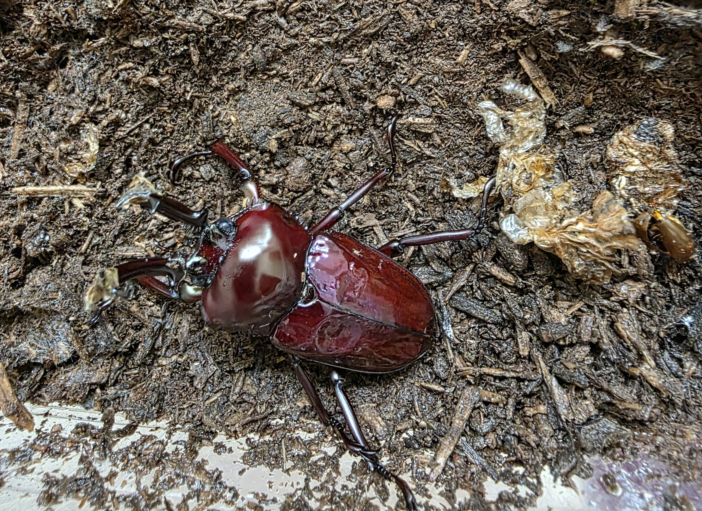
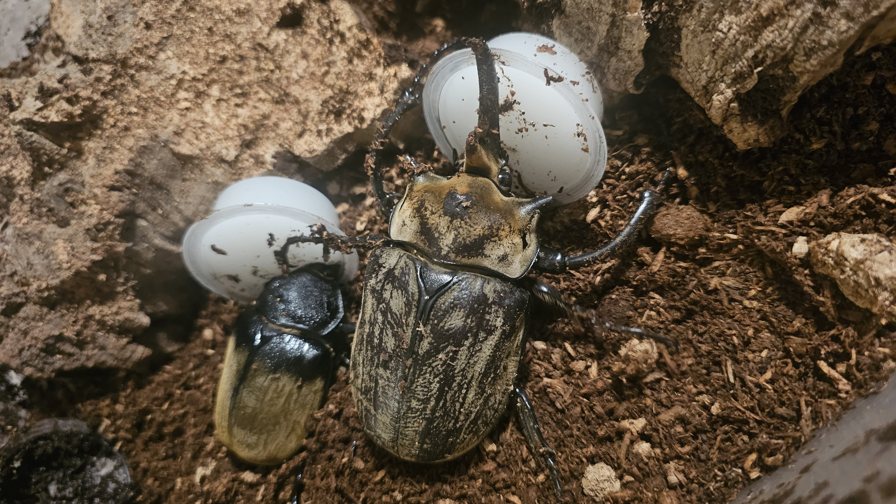
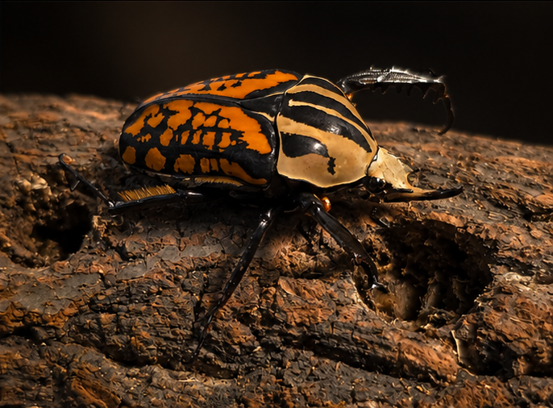

Introduction to Coleoptera
Coleoptera is the scientific order of all beetles. This is one of the most diverse groups of animals on Earty. They can be found in nearly every terrestrial habitat, from tropical rainforests to deserts. Beetles have a hardended set of forewings called elytra. Elytra protect the delicate hindwings and abdomen. Beetles go through four life stages: egg, larva, pupa, and adult.
Stag Beetles (Lucanidae)

Stag beetles are best known for the enlarged mandibles found on mandibles Their giant mandibles are reminescent of antlers on a male deer, stag, and are used in the same manner, of fighting other males for breeding purposes. Stag beetle females lay their eggs in decaying wood, and feeding on white rotted wood. In captivity this is achievfed by using fermented white wood soil, flake soil, this gives the larvae the adequate nutrition needed to life a healthy life and reach adulthood.
Rhinoceros Beetles (Dynastinae)

Rhinoceros beetles are a group of scarabs that are known for Their prominent horns found on the head of many males in various species of Dynastinae. This family of beetles includes some of the biggest species of beetles, such as the beetle Dynastes hercules hercules. The larvae of rhinoceros beetles eat decayed hardwood as well as leaf litter and humus, highly decayed dirt, to meet their nutritional needs.
Flower Beetles (Cetoniinae)

Flower beetles are known for their vibrant colors and metallic sheens. The beetles in this family are very active. These species inhabit many tropical forests and grasslands. Adults feed on nectar, pollen, ripe fruit, and tree sap. Unlike the previous two beetles, stag and rhino, flower beetles are strong fliers and often seen during the day.
Feeding and Nutrition in Captivity
Beetle diets change significantly throughout their lifecycle. As larvae the diet completely consists of decayed plant or white wood matter. Each family of beetle prefers a specific degridation of these woods as well. Stag beetles prefer a younger rotteded wood while flowers prefer an older rotted wood and rhinoceros beetles are typically considered to be in the middle of the pack. Adults, on the other hand, typically eat tree sap, rippend fruit, nectar and bee pollen. In captivity a commercial jelly specifically formulated for adult beetles is made and can be bought and fed to adult beetles.
Beetle Breeding Behavior
Males will readily take to breeding with a female as soon as they are out of dormancy, a time in which the beetles mature sexually, and become active this is marked by them roaming throughout their enclosure and when they eat any offered food. There is a video that shows what a beetle copulating looks like and what is not aggressive behavior.
If you would like a more detailed explanation on beetle care, or would like additional information on other reptiles please visit this More information